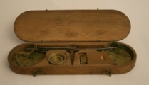
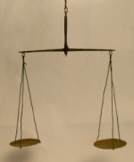
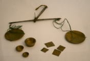

Contrairement à notre époque, et jusqu'à la Révolution française, la monnaie n'était pas fiduciaire. Elle était caractérisée par sa teneur en or ou en argent et aucune valeur n'était indiquée sur les pièces. Le poids d'une pièce dépendait du nombre de pièces taillées dans un lingot de métal précieux pur, appelé « marc » qui pesait 244,753 grammes.
Les unités de poids étaient les suivantes :
- 1 livre = 489,506 g (elle dura jusqu'au début du XIIIe siècle et fut remplacée par le marc) ;
- 1 marc = ½ livre = 244,753 g ;
- 1 once = ⅛ marc = 30,594 g ;
- 1 gros = ⅛ once = 3,824 g ;
- 1 denier = ⅓ gros = 1,275 g ;
- 1 grain = 1/24 denier = 0,053 g.
Les pièces de monnaie en circulation émanaient aussi bien du Roi de France que des autorités des pays voisins. À cause de l'évolution du prix de l'or et de l'argent, le poids des pièces changeait souvent. Il était donc indispensable à certaines professions de vérifier le poids des espèces.
Source : pagesperso-orange.fr/jean-louis.philippart
Balance du changeur (XVIIIe siècle)
Il s'agit d'une balance utilisée par les marchands et commerçants pour vérifier le poids des nombreuses monnaies, surtout celles en or, en circulation en France avant la Révolution. D'un format proche de celui d'un étui à lunettes, la boîte pouvait être facilement mise dans une poche.
  
Monnaie sonnante et trébuchante
Une pièce de monnaie est sonnante lorsqu'elle ne contient pas de vil métal et dont le titre approche 1000 ‰ en or ou en argent ; de cette manière, elle tinte de manière reconnaissable pour une oreille avertie. Elle est trébuchante quand elle ne craint pas l'épreuve du trébuchet (une balance d'orfèvre). Demander à être payé en monnaie sonnante et trébuchante signifiait que l'on voulait être payé en monnaie authentique et neuve !
Source : Wikipedia
Quelques poids monétaires
Poids monétaire à identifier
Revers : Couronne – VII D XII G – Lys (7 deniers et 12 grains).
Henri III – Henri IV · Demi-teston
Revers : DEMY TESTON – III D XVII G (3 deniers 17 grains).